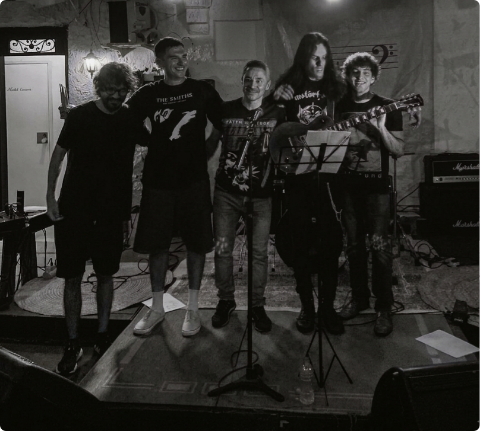
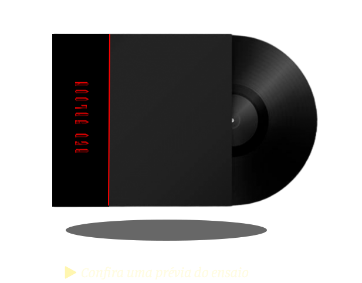
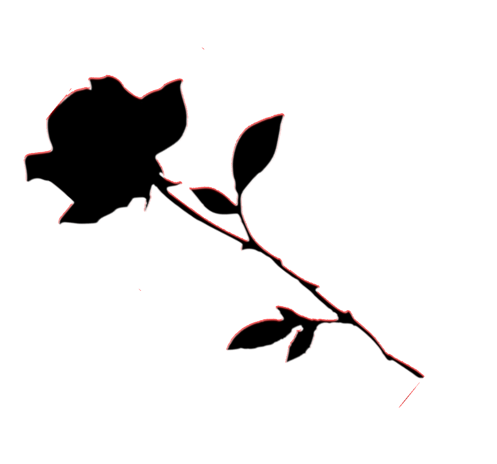
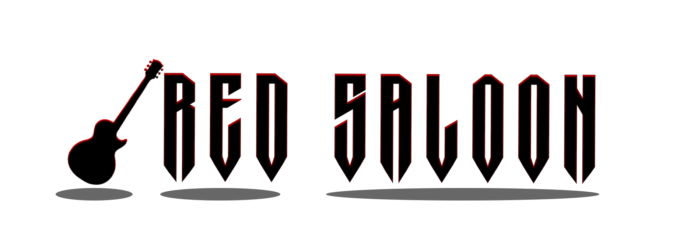

CONHEÇA AS MENTES POR TRÁS DE CADA RIFF



Red Saloon é uma banda de Rock e Heavy Metal, dedicada em reviver os maiores clássicos das décadas de 80 e 90. Nascida nos palcos da escola de música Studio 9, o grupo traz um repertório cover poderoso que homenageia gigantes como Black Sabbath, Metallica, Guns N' Roses e entre outras bandas clássicas do Rock Heavy Metal. Com performances enérgicas e alta fidelidade sonora, garantindo uma experiência nostálgica e inesquecível em cada show.
Mais do que dividir o palco, a Red Saloon é movida pela amizade e pela paixão compartilhada pelo Rock n' Roll. Essa forte sintonia entre os músicos é o que transforma cada ensaio e apresentação em uma verdadeira celebração aos grandes clássicos das décadas de 80 e 90.
Além dos instrumentos e da técnica, a Red Saloon se sustenta na combinação de suas mentes. O grupo soma diferentes trajetórias e paixões individuais, que vão desde o universo geek e da psicologia até as artes e o ecletismo musical, para criar um ambiente onde a cumplicidade e a diversão são as prioridades. Uma união onde as diferenças individuais se tornam o combustível para a atitude no palco.


Fruto do desejo de reviver a era de ouro do Rock e do Heavy Metal. Mais do que tocar as músicas que marcaram gerações, o objetivo é resgatar a energia, a distorção e a rebeldia crua das décadas de 80 e 90 diretamente no palco.
